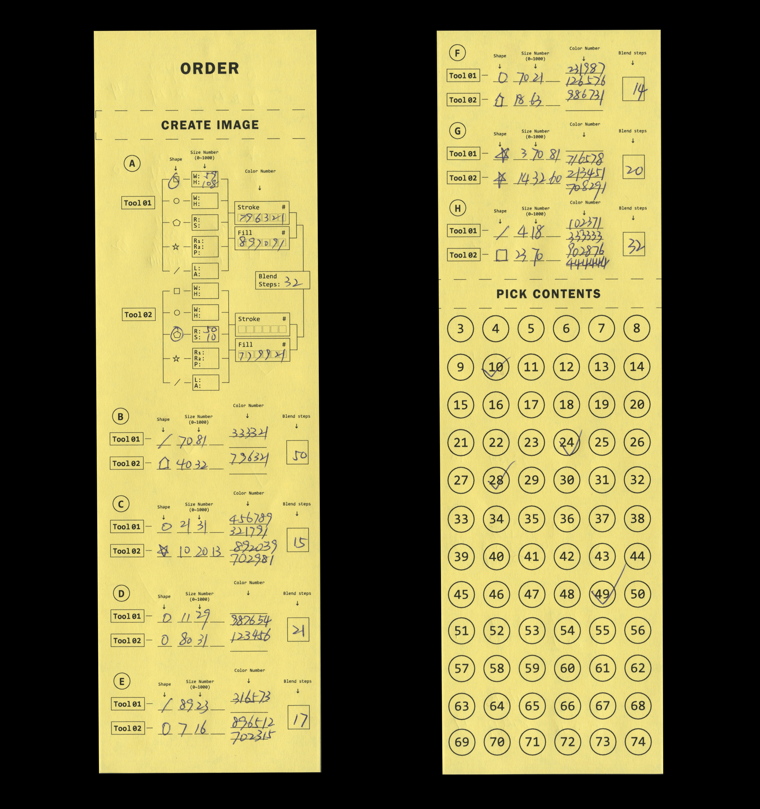
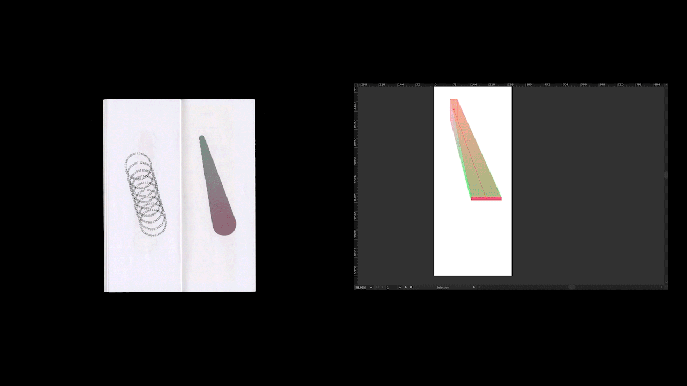
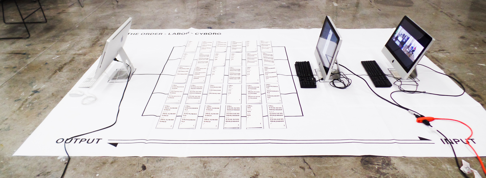
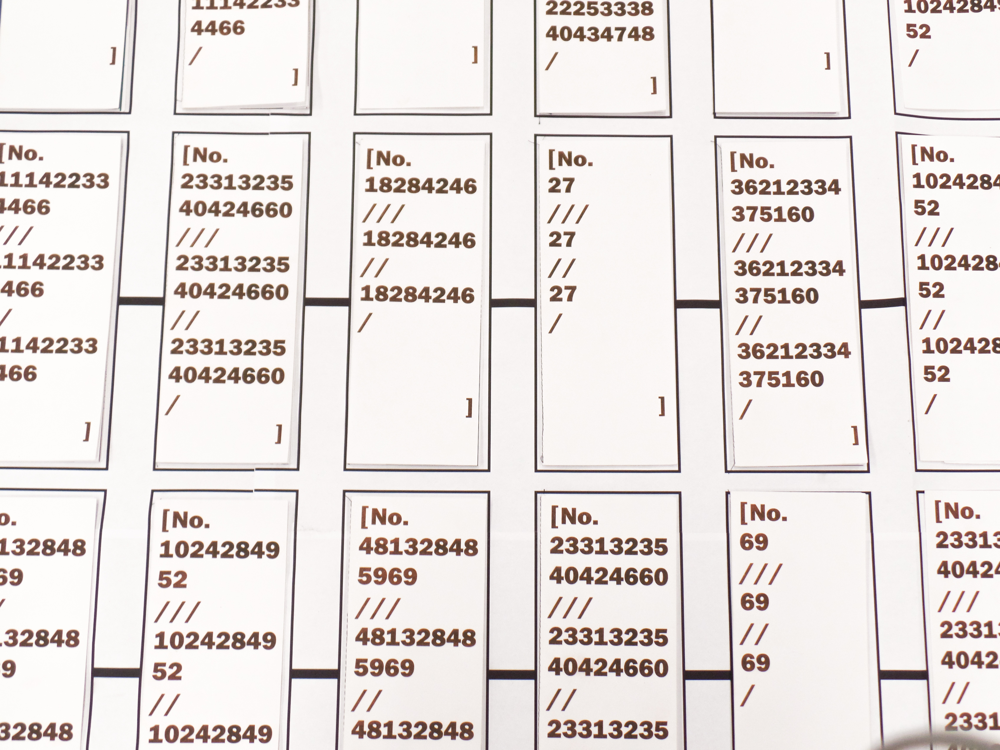

The order, the labor and in the end we all become to the cyborg. Living in this digital era, the way we work with machine pushes us becoming to a cyborg. The realtionship of labor between machine and me created and build The Order books. Who is labor? Who is machine...
The order 项目将机械从数字输入到图像形成再到最后的产品对应输出的过程视觉化，人力化。我将大众随意写给我的数字，输入电脑设计工具中，并输出任意的视觉图形，并将其装订成册。从接受信息，到和机械公共工作并转化信息的人物不同身份中不断切换。在机械和人工共同工作的工作中，人工是否成为机械的一部分， 而机械是否又成为人工的一部分呢？Cyborg又该如何解读？
✿ The order book ✿
{kind=link}




The order book, 2019
Technique: Paper Print,Risograh Printing, Binding book by sewing machine
Software: InDesign, Photoshop, Illustrator
The Order Book describes the labor relationship between humans and machines, which connects to the visual language of machine humanities. Each image creates in blend tool and shape tool in Adobe illustrator. The number and option of each shape and blend are from the order sheet, which I hand out to ten people. They write down any random number on that sheet and return to me. Then I produced ten different books for them and binding the book by sewing machine. During this work process, numbers transfer images, words tracing the shape of pictures on each page. In this work, I am into the beautify of machine production and visual transformation between numbers and forms.
Order Book描述了人与机器之间的劳动关系，与机器人文的视觉语言相联系。在Adobe Illustrator中使用混合工具和形状工具创建的每个图像。每种形状和混合的数量和选项都来自我发给10个人的订单。他们在那张订单上随意写下各组数字，然后再返还给我。然后我为他们制作了十本不同的书，用缝纫机把书装订好。在这个工作过程中，数字传递图像，文字描摹形状。呈现了机器生产的美化和数字与形式之间的视觉转换。
✿ The order VR space ✿
The order VR space, 2019
Technique: 3D Design, Sound Art
Platform: local iMac and Pc, interactive with mouse
Software: Unity, Maya, Audition, 3D online transform, Photoshop, Illustrator
“When you enter this order space, you are one of us.”
The Order VR Space is an exploration of media publication of the Order Book project. I used Maya and Unity to build a virtual reality world. The models are from the conversation of each 2D image of order books. If you click on each model, the sound will play on the number of the model, which is from each order sheet. “Click” and “Touch” are the gesture language from humans relating to the machine reaction. This piece discusses the function of human and machine. The machine reacts because of the participation of humans. We become a part of the device working, and the computer becomes a part of us.
The Order VR Space是Order Book项目对于媒体出版物的一个探索。我使用Maya和Unity创建了一个虚拟的世界。模型来自Order Book的每个二维图像。如果你点击每个模型，声音将播放出模型的具体信息，这是来自每个订单表。“点击”和“触摸”是人类与机器反应相关的手势语言。这篇文章讨论了人和机器的作用。因为有人类的参与，机器才会做出反应。我们成为工作设备的一部分，电脑也成为我们的一部分。
✿ The order & Labor & Cyborg Installation ✿
{kind=link}

{kind=link}
The order & Labor & Cyborg, 2019
Size: 300 cm x 160 cm oversize printed paper, 11 inches x 4.25 inches book size (10 pages for each)
Technique: multimedia installation, Paper Print,Risograh Printing, Binding book by sewing machine
Software: InDesign, Photoshop, Illustrator, After Effect